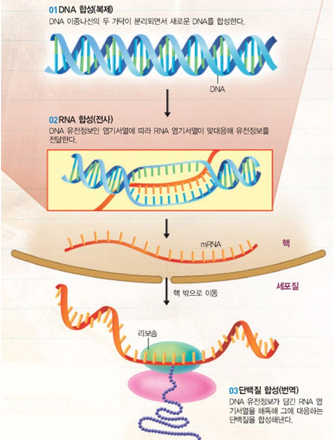
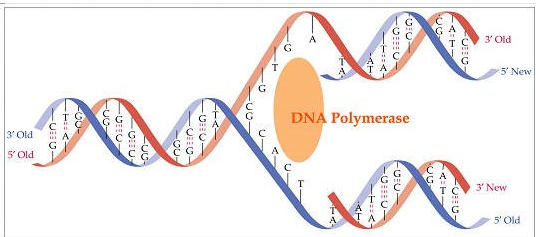
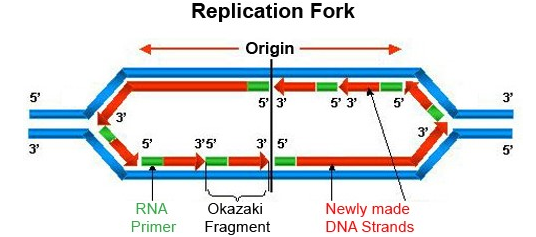
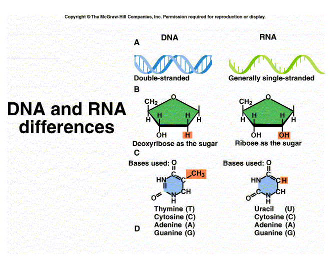
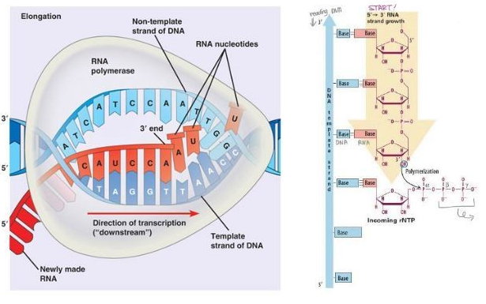
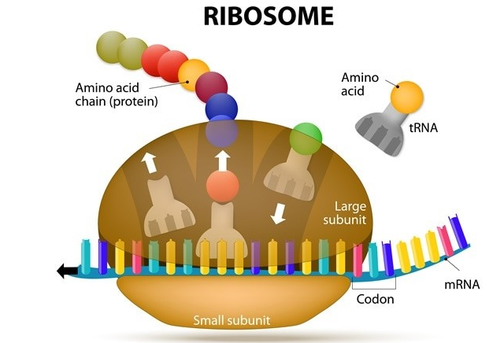
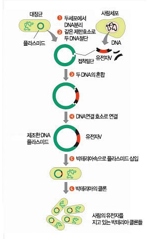
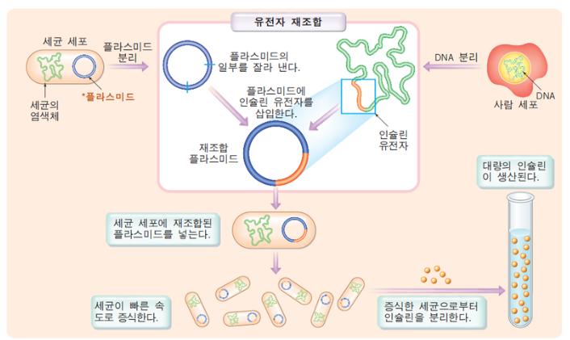

DNA복제&전사&번역(DNA to Protein)
▽DNA가 단백질로 발현되는 과정 요약영상▽
↑'설정'>'자막'>'한국어' 를 클릭하시면 한국어 자막으로 영상 시청 가능합니다.
▽DNA복제→전사→번역 한눈에 알아보기▽

세포 분열시, DNA는 복제되어 각각 세포의 핵에 하나씩 들어간다.
또 우리 몸에서 단백질의 생성을 필요로 하면 전사와 번역이 일어난다.
1)DNA복제
DNA는 유전물질로서, 세포가 분열할 때 이중나선 가닥이 각각 풀려 2개의 독자적인 가닥이 만들어진다.
풀려서 생긴 2개의 가닥은 각각 또 자신을 주형삼아 새로운 가닥을 만들어내 총 4개의 가닥이 만들어진다.
처음에 2가닥이였던 이중나선 가닥 1쌍은 4가닥인 이중나선 가닥 2쌍으로 불어난다.
불어난 2쌍은 각각 1쌍씩 한 세포에 다시 들어가게 된다. 이것을 DNA의 복제라고 부른다.
DNA염기 중 아데닌은 티민과 결합하고, 구아닌은 사이토신과 결합하는 성질을 이용해
한 가닥 한 가닥씩 복제가 이루어진다.

△DNA복제는 DNA polymerase라는 효소가 주형 가닥을 기준으로 새로운 가닥을 합성해내는 과정이다△
*이 때, 복제원점(origin of replication)을 기준으로 양방향으로 합성됨▽

2)DNA전사
DNA전사 단원을 나가기 앞서 DNA와 RNA의 차이점을 먼저 알아보자.

▽DNA전사과정▽

DNA복제가 주형가닥에 새로운 DNA분자를 합성하는 것이라면,
전사는 DNA주형가닥에 상보적인 RNA분자를 합성하는 것이다.
그리고 이렇게 전사된 RNA는 mRNA(messenger RNA)라고 불리운다.
3)DNA번역

위에 DNA전사 과정에서 만들어진 mRNA들은 리보솜과 tRNA사이에 낑겨서 붙잡힌다.
그런다음 mRNA의 염기서열 세 개씩 한 묶음(코돈)으로 읽어서
각각의 코돈에 해당하는 아미노산들을 이어붙이면 단백질 합성이 이루어진다.
이것을 바로 번역이라고 부른다.
예를 들어 임이의 DNA조각 서열이 3'--GTGCACCTT--5'이였다면,
저 DNA조각을 주형으로 전사된 mRNA의 서열은 5'--CACGUGGAA--3'이 된다.(RNA는 T염기대신 U염기를 가짐)
그리고 mRNA의 염기서열 3개씩 한 묶음으로, 즉 CAC/GUG/GAA 이렇게 총 3개의 코돈에 해당하는 아미노산을
tRNA가 끌고와서 이어붙이는 과정이 DNA전사→DNA번역 과정인 것이다.
유전자재조합(gene recombination)

△DNA재조합 과정은 다음과같다△
우리가 만들고싶은 단백질의 유전자를 저 벡터 중간에 끼워넣으면 저 벡터의 전사시스템이 작동하여 그대로
저 유전자를 전사하고, 곧이어 번역이 일어나면서 필요한 단백질을 만들게 된다.
이러한 DNA재조합의 가장 유명한 예는 바로 인슐린인데, 인슐린은 당뇨 치료제로서 최초로 유전자재조합을 통해 대량생산이 가능하게 된 의약품 중의 하나이다.▽
